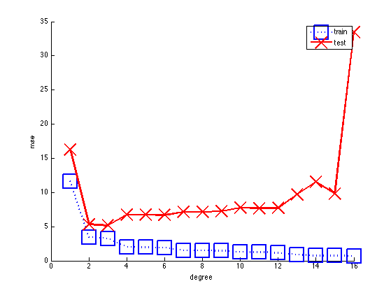
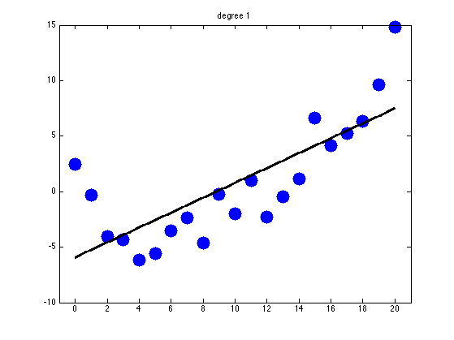
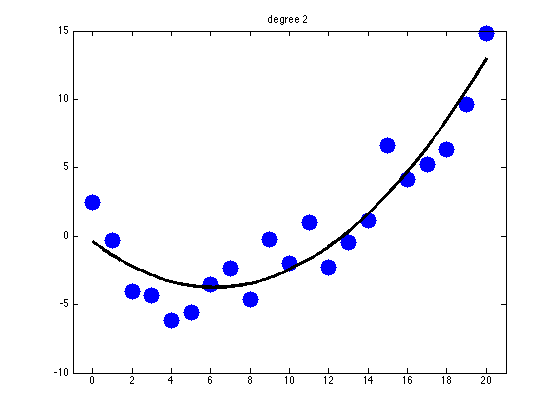
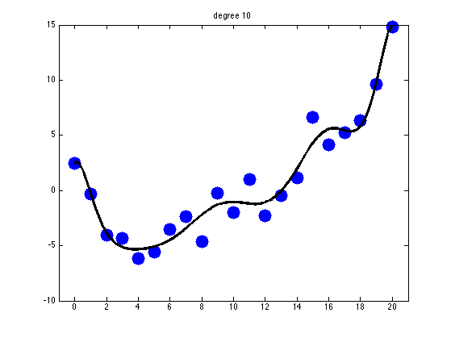
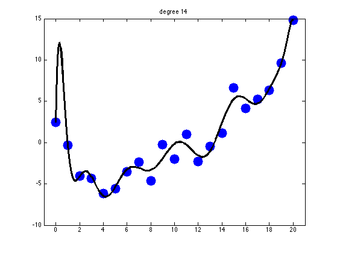
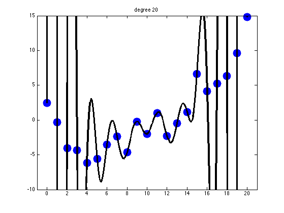
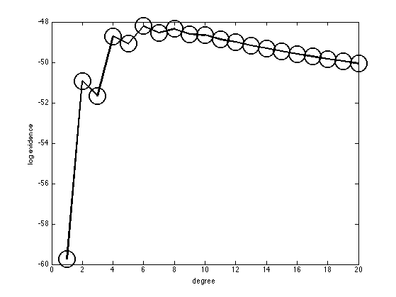
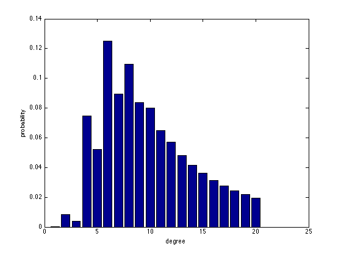

Contents
Linear Regression with Polynomial Basis of different degrees
N = 21;
[xtrain, ytrain, xtest, ytestNoisefree, ytest] = ...
polyDataMake('sampling','thibaux', 'n', N);
degs = 1:20;
Nm = length(degs);
Plot error vs degree
mseTrain = zeros(1,Nm); mseTest = zeros(1,Nm);
for m=1:length(degs)
deg = degs(m);
pp = preprocessorCreate('rescaleX', true, 'poly', deg, 'addOnes', true);
model = linregFit(xtrain, ytrain, 'preproc', pp);
ypredTrain = linregPredict(model, xtrain);
ypredTest = linregPredict(model, xtest);
mseTrain(m) = mean((ytrain-ypredTrain).^2);
mseTest(m) = mean((ytest-ypredTest).^2);
end
ndx = (degs<=16);
figure;
hold on
plot(degs(ndx), mseTrain(ndx), 'bs:', 'linewidth', 2, 'markersize', 24);
plot(degs(ndx), mseTest(ndx), 'rx-', 'linewidth', 2, 'markersize', 24);
xlabel('degree')
ylabel('mse')
legend('train', 'test')
printPmtkFigure('linregPolyVsDegreeUcurve')

Plot fitted function for chosen values of degree
for deg = [1, 2, 10, 14, 20]
pp = preprocessorCreate('rescaleX', true, 'poly', deg, 'addOnes', true);
model = linregFit(xtrain, ytrain, 'preproc', pp);
ypredTrain = linregPredict(model, xtrain);
ypredTest = linregPredict(model, xtest);
mseTrain(m) = mean((ytrain-ypredTrain).^2);
mseTest(m) = mean((ytest-ypredTest).^2);
figure;
plot(xtrain,ytrain,'.b', 'markersize', 50);
hold on;
plot(xtest, ypredTest, 'k', 'linewidth', 3, 'markersize', 20);
hold off
title(sprintf('degree %d', deg))
set(gca,'ylim',[-10 15]);
set(gca,'xlim',[-1 21]);
printPmtkFigure(sprintf('polyfitDemo%d', deg))
end
    
Compute log evidence for each model
for m=1:length(degs)
deg = degs(m);
pp = preprocessorCreate('rescaleX', true, 'poly', deg, 'addOnes', true);
[modelEB, logev(m)] = linregFitBayes(xtrain, ytrain, 'preproc', pp, ...
'prior', 'eb');
end
figure;
probs = exp(normalizeLogspace(logev));
plot(degs, logev ,'ko-', 'linewidth', 2, 'markersize', 24);
xlabel('degree'); ylabel('log evidence')
printPmtkFigure('linregPolyVsDegreeLogev')
figure; bar(degs, probs)
xlabel('degree'); ylabel('probability')
printPmtkFigure('linregPolyVsDegreeProbModel')
 